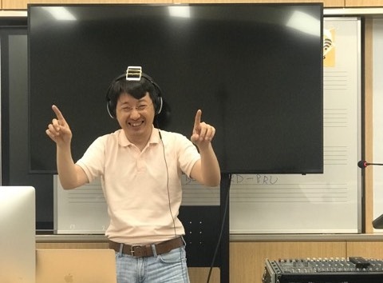

Composer Allen Shu-Cheng Wu has had an extensive career as a film composer in both Taiwan and in the United States. Career highlights include having recorded the 1929 silent film, Un Chien Andalou, in full surround audio; a live collaboration with the Chicago Modern Orchestra for the score to Renee Baker's Borderline; and a worldwide broadcast of his Laptop Improvisations with electronics, trumpet and theremin. He has also participated in multiple presentations at various international festivals around the world.
A Fulbright scholar, Allen holds a doctorate in composition and theory from the University of Illinois at Urbana Champaign, and, along with having taught film music at many universities in Taiwan, he also has invented an AI sample synthesizer called SuperSampler.
Software
- Ambisonic Toolkit in Kyma: a program module for Kyma users to incorporate 3D audio in their sound design.
- SuperSampler: my innovation which automatically combines sounds into compositional motives.
- Spectrum Panner: A software plugin which pans different frequencies of a sound to different locations between speakers
- FM Calculator: A simple program that calculates frequency content of a frequency modulated sine wave.
Composition
- Traps for For Channel Audio System, Wecom Tablet, and Kyma 2019
- Sound Track for Un Chien Andalou for Eight Channel Audio System 2018
- Shadow’s Shadow for Four Channel Audio System with with Leap Motion, Linnstrument, and Kyma 2018
- UniversesrevinU for Four Channel Audio System with Leap Motion, Linnstrument, and Kyma 2018
- Canción” for Vocal Baritone and Piano 2018
- Love Birds for Trombone and Two Channel Audio System 2016
- Le Chute for Eight Channel Audio System 2015
- Binbinlayan for Children’s Choir 2014
- ZauberClavier for Piano and Two Channel Audio System 2014
- Bring in the Wine for Soprano and Piano 2013
- Woods for Two Percussionists 2013
- Axonometric Projection for Eight Channel Audio System 2013
- Uno Canto for 4–7 Singers in a UNO game 2012
- Plots for 5.1 Channel Audio System 2012
- Deì for Two Piano and Two Theremin 2012
- Uniformity Theory for Four Channel Audio System 2012
- Synchronicity for Piano Septet 2012
- Music for Theremin for Four Channel Audio System and Video with Max/MSP 2011
- Wondering Beyond for Two Channel Audio System 2011
- Cycle for SATB Voice Quartet 2011
- For Flute Solo for Solo Flute 2011
- Interactive Piece for SuperCollider, Theremin, and DiscKlavier 2010
- Roller Coaster for K2000 Synthesizer 2010
- Legend of Light for Two Channel Audio System 2010
- “Wondering for Violin and Piano 2010
- Library for Solo Piano 2010
- Algorithmic composition for UIUC Carillon 2009
- Trio for Violin, Viola, and Bassoon 2009
- Duet for two Clarinets 2009
- Melody for Solo Theremin 2009
- Call Me for Violin and Max/MSP 2009
- Sound Track for short film God Zone 2008
Speech / Presentation
- SuperSampler, a gesture making sampler synthesizer in SuperCollider at Electroacoustic Barn Dance, Jacksonville University 11/15/2019
- Workshop: Algorithm and Processing Technique in First Order Ambisonic at the Kyma International Sound Symposium (KISS2019), Busan, South Korea 8/31/2019
- Composition Techniques with Physical Modeling and Sound in Space at the Kyma International Sound Symposium (KISS2019), Busan, South Korea 8/31/2019
- Introduction to SuperSampler: A Motivic Composition Tool for Electroacoustic and Live Performance in SuperCollider at Composer Forum, University of Illinois at Urbana-Champaign 11/15/2018
- Techniques with Markov Model as Modulator in Algorithmic Electroacoustic Composition at the Kyma International Sound Symposium (KISS2018), University of California Santa Cruz 8/31/2018
- SuperSampler: A New Polyphonic Concatenative Sampler Synthesizer in SuperCollider at ICMC, Shanghai 11/17/2017
- SuperSampler: A New Polyphonic Concatenative Sampler Synthesizer in SuperCollider at Pacific Northwest Graduate Music Conference, University of Washington 2/17/2017